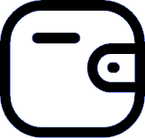

<ion-router-outlet style="background-color: white;"></ion-router-outlet>

<ion-menu side="start" menuId="first" contentId="main" style="background-color: white !important;">
  <ion-header>
    <ion-toolbar style="padding-top: 30px;">
      <ion-title>YaBi</ion-title>
    </ion-toolbar>
  </ion-header>
  <ion-content class="background-menu" style="background-color: white !important;">
    <div class="item" (click)="navigateToCategoriesPage()">
      <i class="fa fa-calendar-o" style="font-size: 25px"></i>
      <span>Catégories</span>
      <div class="icon">
        
      </div>
    </div>
    <div class="item" (click)="navigateToBillesPage()">
      <i class="fa fa-barcode" style="font-size: 25px"></i>
      <span>Mes billets</span>
      <div class="icon">
        
      </div>
    </div>
    <div class="item" (click)="navigateToFavorisPage()">
      <i class="fa fa-bookmark-o" style="font-size: 25px"></i>
      <!--  -->
      <span>Mes favoris</span>
      <div class="icon">
        
      </div>
    </div>
    <div class="item" (click)="navigateToInvitationsPage()">
      <i class="fa fa-folder-open-o" style="font-size: 25px"></i>
      <!--  -->
      <span>Mes invitations</span>
      <div class="icon">
        
      </div>
    </div>
    <div class="item" (click)="navigateToWalletPage()">
      <i class="fas fa-wallet" style="font-size: 25px"></i>
      <!--  -->
      <span>YaBi wallet</span>
      <div class="icon">
        
      </div>
    </div>
    <div class="item" (click)="navigateToHistoryPage()">
      <i class="fa fa-history" style="font-size: 25px"></i>
      <!--  -->
      <span>Mon historique</span>
      <div class="icon">
        
      </div>
    </div>
    <div class="item">
    </div>
    <div class="item">
    </div>
    <div class="item">
    </div>
    <div class="item">
    </div>
    <div class="item" (click)="navigateToAboutPage()">
      <i class="fa fa-info-circle" style="font-size: 25px"></i>
      <span>A propos</span>
      <!-- <div class="icon">
          
        </div> -->
    </div>
    <!-- <ion-list>
      <ion-item>Menu Item</ion-item>
    </ion-list> -->
  </ion-content>
</ion-menu>

<div class="middle-button-container" (click)="navigateToAddEventPage()">
  <p style="text-align:center;">
    <ion-fab style="margin-top: -75px; margin-left: -30px;">
      <ion-fab-button style="--background:#FFFFFF" size="small">
        <ion-icon name="add-circle" style="width: 30px; height: 30px; color:#275C3C" size="large"></ion-icon>
      </ion-fab-button>
    </ion-fab>
  </p>
</div>

<ion-tabs>

  <ion-tab-bar slot="bottom" style="background: #eef2ee; !important;">

    <ion-tab-button style="background: #eef2ee; !important;">
      <div id="main" style="background: #eef2ee; !important;">
        <ion-menu-toggle style="background: #eef2ee; !important;">
          <ion-icon name="apps" style="width: 22px; height: 22px;color: #275C3C"></ion-icon>
        </ion-menu-toggle>
      </div>
    </ion-tab-button>

    <ion-tab-button (click)="navigateToHomePage()">

      <ion-icon name="home" style="width: 22px; height: 22px; color:#275C3C"></ion-icon>
      <!-- <ion-icon src="assets/bookmark.svg"></ion-icon> -->
    </ion-tab-button>

    <ion-tab-button>
      <!-- <ion-icon src="assets/Location.svg"></ion-icon> -->
    </ion-tab-button>

    <ion-tab-button (click)="navigateToSearchPage()">
      <ion-icon style="width: 22px; height: 22px; color:#275C3C" name="search"></ion-icon>
    </ion-tab-button>

    <ion-tab-button (click)="navigateToProfilePage()">
      <ion-icon style="width: 22px; height: 22px; color:#275C3C" name="person-circle"></ion-icon>
      <!-- <ion-icon style="color:#275C3C" src="assets/account_circle.svg"></ion-icon> -->
    </ion-tab-button>

  </ion-tab-bar>

</ion-tabs>